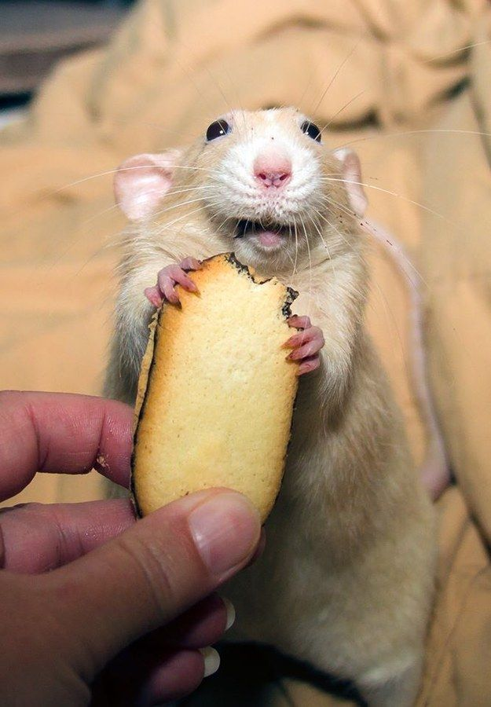

Mildred
Mildred is a cozy rat who likes to eat popcorn, crackers and bugs. Her favorite
pastimes include making poop tunnels and watching humans kick
balls into nets on television. She doesn't understand the intricacies of
human society, but that's alright. She suspects they don't, either.
Stats
- Cuteness: 4/5
- Football knowledge: 6/5
- Smarts: 2/5

Go Back